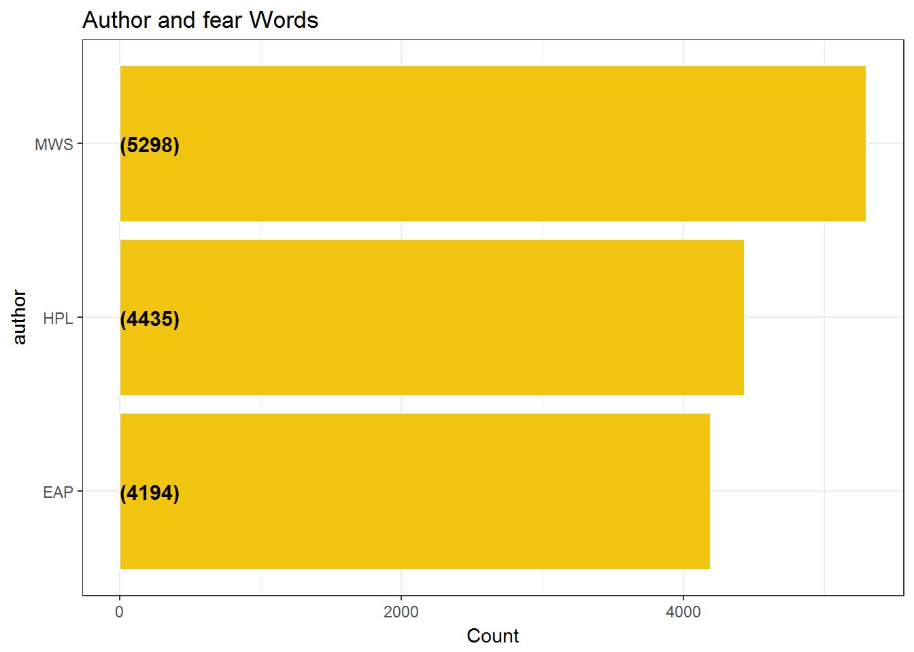
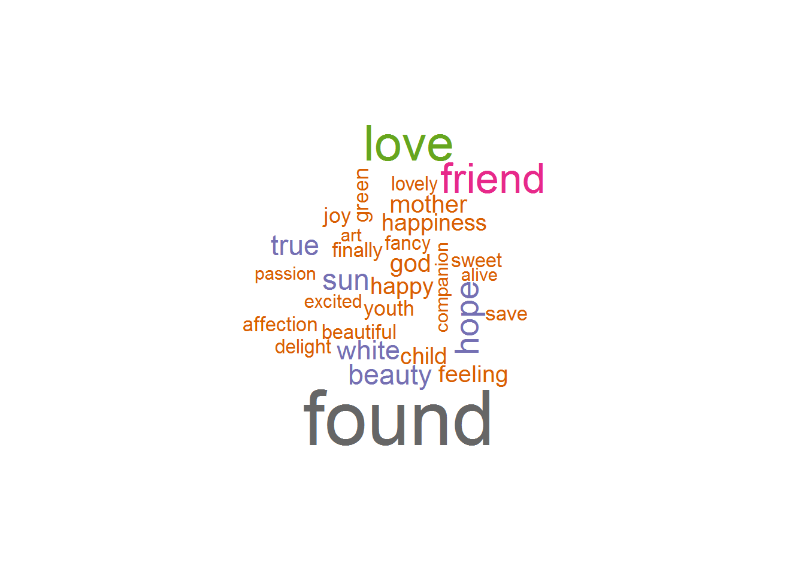
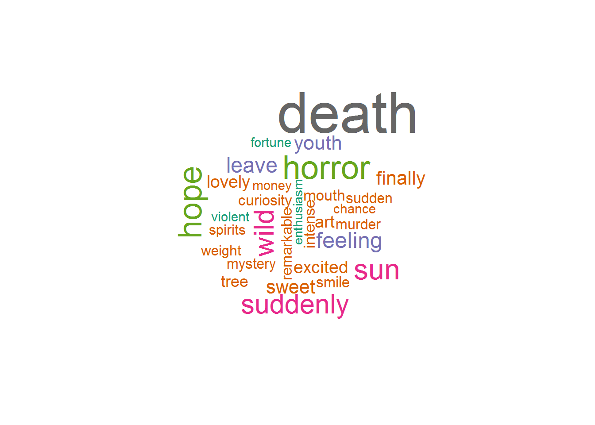
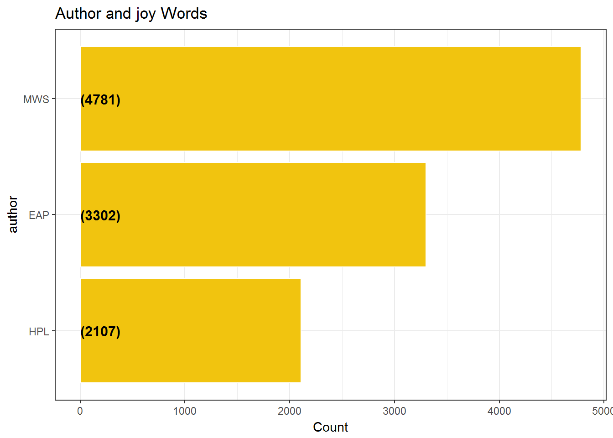

Chapter 13 Sentiment Analysis using NRC Sentiment lexicon
We examine the following sentiments using NRC Sentiment lexicon
Fear
Surprise
Joy
Mary Wollstonecraft Shelley is the most Fearful and most Surprising and most Joyful author.
Edgar Allen Poe is the least Fearful author.
HP Lovecraft is the least Surprising author.
HP Lovecraft is the least Joyful author.
13.1 Sentiment Analysis Words - Fear
The plot shows the authors with the Count of fear words.
plotEmotions = function(emotion,fillColor = fillColor2)
{
nrcEmotions = get_sentiments("nrc") %>%
filter(sentiment == emotion)
train %>%
unnest_tokens(word, text) %>%
filter(!word %in% stop_words$word) %>%
inner_join(nrcEmotions) %>%
group_by(author) %>%
summarise(Count = n()) %>%
ungroup() %>%
mutate(author = reorder(author,Count)) %>%
ggplot(aes(x = author,y = Count)) +
geom_bar(stat='identity',colour="white", fill =fillColor) +
geom_text(aes(x = author, y = 1, label = paste0("(",Count,")",sep="")),
hjust=0, vjust=.5, size = 4, colour = 'black',
fontface = 'bold') +
labs(x = 'author', y = 'Count',
title = paste0('Author and ',emotion,' Words ')) +
coord_flip() +
theme_bw()
}
plotEmotions("fear")
13.2 Fear Word Cloud - MWP
The following table and word cloud shows the fear words written by MWP , the most fearful author.
getEmotionalWords = function(emotion,author)
{
nrcEmotions = get_sentiments("nrc") %>%
filter(sentiment == emotion)
emotionalWords = train %>%
unnest_tokens(word, text) %>%
filter(!word %in% stop_words$word) %>%
filter(author == author) %>%
inner_join(nrcEmotions) %>%
group_by(word) %>%
summarise(Count = n()) %>%
arrange(desc(Count))
return(emotionalWords)
}
FearWordsMWS = getEmotionalWords('fear','MWS')
kable(head(FearWordsMWS),"html") %>%
kable_styling(bootstrap_options = c("striped", "hover", "condensed", "responsive")) %>%
scroll_box(width = "800px")| word | Count |
|---|---|
| death | 380 |
| fear | 240 |
| horror | 198 |
| doubt | 159 |
| terrible | 146 |
| change | 136 |
wordcloud(FearWordsMWS$word, FearWordsMWS$Count, max.words = 30,colors=brewer.pal(8, "Dark2"))
13.3 Sentiment Analysis Words - Surprise
The plot shows the authors with the Count of Surprise words.
plotEmotions("surprise",fillColor)
13.4 Surprise Word Cloud - MWP
The following table and word cloud shows the surprising words written by MWP , the most surprising author.
SurpriseWordsMWS = getEmotionalWords('surprise','MWS')
kable(head(SurpriseWordsMWS),"html") %>%
kable_styling(bootstrap_options = c("striped", "hover", "condensed", "responsive")) %>%
scroll_box(width = "800px")| word | Count |
|---|---|
| death | 380 |
| horror | 198 |
| hope | 195 |
| sun | 167 |
| wild | 157 |
| suddenly | 151 |
wordcloud(SurpriseWordsMWS$word, SurpriseWordsMWS$Count, max.words = 30,colors=brewer.pal(8, "Dark2"))
13.5 Sentiment Analysis Words - Joy
The plot shows the authors with the Count of Joy words.
plotEmotions("joy",fillColor2)
13.6 Joy Word Cloud - MWP
The following table and word cloud shows the joy words written by MWP , the most joy author.
JoyWordsMWS = getEmotionalWords('joy','MWS')
kable(head(JoyWordsMWS),"html") %>%
kable_styling(bootstrap_options = c("striped", "hover", "condensed", "responsive")) %>%
scroll_box(width = "800px")| word | Count |
|---|---|
| found | 559 |
| love | 331 |
| friend | 270 |
| hope | 195 |
| sun | 167 |
| beauty | 154 |
wordcloud(JoyWordsMWS$word, JoyWordsMWS$Count, max.words = 30,colors=brewer.pal(8, "Dark2"))